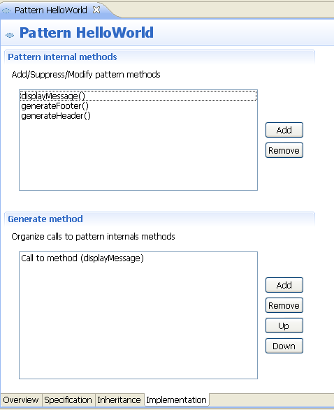
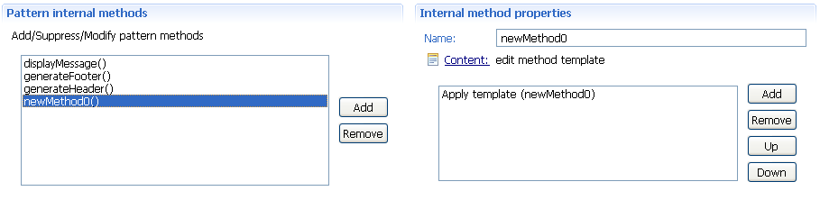
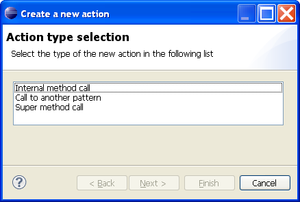
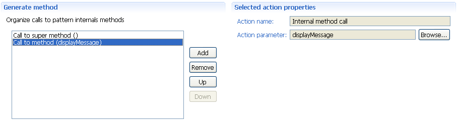

Implementation Page
The implementation page defines the pattern implemented behavior.
The implementation is splitted into two concepts :

The Pattern internal methods section
This is a collection of defined internal methods (behaviors).
A new method can be added by clicking the Add button. It's having a default name (something like newMethodXXX).
To modify a method, click it's representation on the left collection. A new section named Internal method properties appears on the right.

The method can be renamed (Name field), its content edited (Content link), and its orchestration modified (Sub-list below).
-
The name needs to be unique within edited pattern.
It must be the same as parent method one (whatever level the parent may be), in case of overriding need.
-
Clicking the Content link does open the associated JET editor.

The editor is displaying the internal method name.
To save changes to the implementation, simply save this editor.
-
The orchestration is having sense in the case of an override only.
See the Generate method section as of how to use this list, only calls to Super can be added here.
An existing method can be removed.
Select it on the left collection, and click the Remove button.
The Generate method section
This method is about orchestrating the inherited or local internal methods.
This is defining the pattern behavior as a whole, and is the only visible entry point from outside the pattern.
To invoke a new action (ie behavior), click the Add button.
A new dialog opens.

- Select the Internal method call action to invoke one of current pattern internal methods.
- Select the Call to another pattern action to invoke another pattern, as part of current behavior.
- Select the Super method call action to either invoke parent orchestration (no parameter) or one of the inherited internal methods (parameter).
You can click an action (left viewer) to see its properties.
A new section (Selected action properties) appears on the right side.

The action properties can not be modified textually, but using the Browse button instead.
To organize the orchestration, select an action on the left viewer, and click the Up or Down buttons as required.

Pattern editor